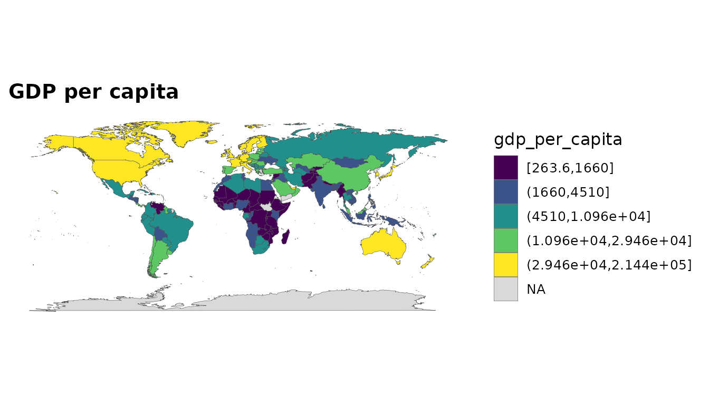
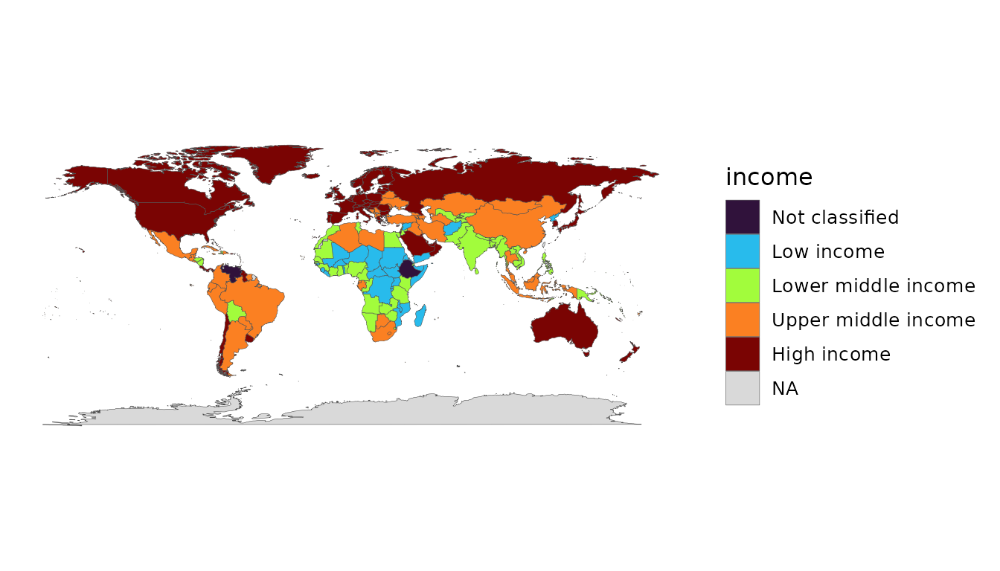

The goal of countryatlas is to get country data onto a map with as little friction as possible, using ISO codes as the universal join key. The happy path is a single call.
A map-ready tibble in one call
With a live connection, world_data(year) returns
everything you need:
data_2020 <- world_data(2020)To keep this vignette offline, we use the bundled snapshot and attach geometry ourselves:
data_2020 <- attach_geometry(world_snapshot$countries, geometry = "polygon")Your first choropleth
No geom_polygon() boilerplate — world_map()
does it:
world_map(data_2020, gdp_per_capita, style = "quantile",
title = "GDP per capita")
Income is an ordered factor, so a categorical fill reads naturally:
world_map(data_2020, income, style = "categorical")
Choosing indicators
You are not limited to GDP. Pass any World Bank indicator code (named, for clean columns), or browse the bundled catalogue:
head(common_indicators)
#> # A tibble: 6 × 3
#> name code description
#> <chr> <chr> <chr>
#> 1 population SP.POP.TOTL Population, total
#> 2 gdp NY.GDP.MKTP.CD GDP (current US$)
#> 3 gdp_constant NY.GDP.MKTP.KD GDP (constant 2015 US$)
#> 4 gdp_per_capita NY.GDP.PCAP.KD GDP per capita (constant 2015 US$)
#> 5 gdp_per_capita_current NY.GDP.PCAP.CD GDP per capita (current US$)
#> 6 gni_per_capita NY.GNP.PCAP.CD GNI per capita (current US$)
country_data(2020, c(life_exp = "SP.DYN.LE00.IN", pop = "SP.POP.TOTL"))